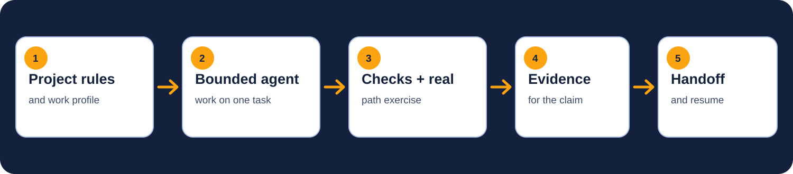

NATIVE · PASSED
Claude Code + Codex
AgentSmith configures their documented local surfaces. Dated native-client evaluation records are available.
OPEN SOURCE · LOCAL FIRST
AgentSmith puts project rules, work-specific checks, and a clear handoff around AI-assisted development. Start with one bounded task. See what failed, what passed, and what actually ran.
macOS · Windows · Linux · No account · No hosted runtime
$ agentsmith
AgentSmith guided setup
Existing project or new folder? existing
Recommended profile: software-dev
# Review the complete plan before any project write.THE WORK LOOP
AgentSmith supplies the structure; your project supplies the checks. The completion claim is tied to something a person can inspect.

A CONCRETE EXAMPLE
In the public First Verified Loop, a readiness test catches a false “ready” result when one required check is missing. The corrected task passes syntax and tests, then a real command reports NOT READY for the incomplete input.
Read the full evidence bundleAGENT SUPPORT
The registry separates instruction discovery, skills and tools, and native runtime support. A target is not a passed certification.
AgentSmith configures their documented local surfaces. Dated native-client evaluation records are available.
GitHub Copilot, Cursor, Gemini CLI, Windsurf / Devin, Cline, Roo Code, Aider, Continue, OpenHands, Goose, OpenCode, JetBrains Junie, Zed, and Jules have adapters and registry-contract fixtures only. Client behavior is not certified; capability gaps are marked in the registry.
TWO WAYS TO START
Both routes inspect the project, recommend a work profile, show the exact plan, and ask before writing.